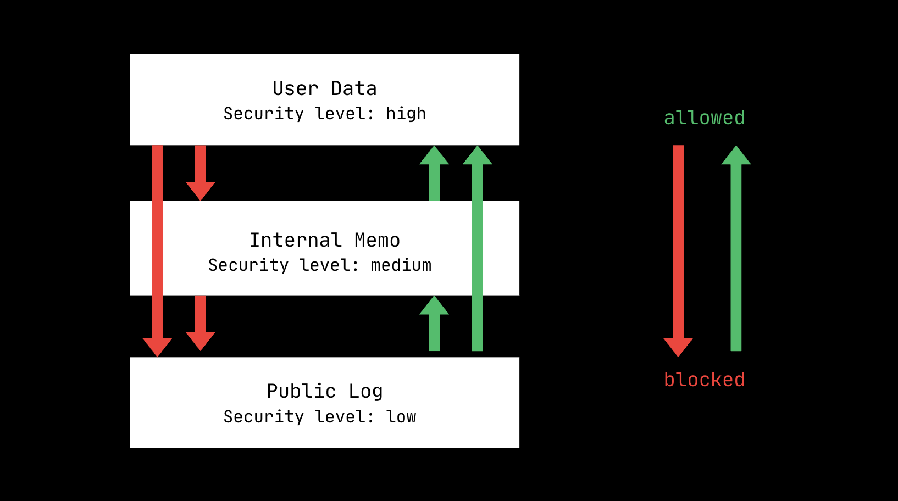

Foundations
In 1977, Denning & Denning published Certification of Programs for Secure Information Flow, which laid out the Lattice Model of Information Flow. Essentially, each piece of data was given a security class. This could be as simple as H for high (sensitive info) and L (not sensitive info), or there could be many sub-tiers. [1]
Information flows in a lattice-like structure, and if we can map out the flow of data transfer, we can make sure that a piece of sensitive info (e.g. a password) cannot make its way onto a lower-class variable (e.g. a piece of text that will be displayed publicly).
The rule governs information flow: data may only flow to variables at an equal or higher security class, never downward to a less-sensitive one. This prevents sensitive data from leaking into less-restricted contexts. The paper presented a general theoretical framework for programs; one of its contributions was showing that these flow rules could be checked statically rather than at runtime. This concept laid the framework for future security research regarding agents.

Prompt Injections
FIDES (Flow Integrity Deterministic Enforcement System) by Costa et al., 2025 takes this idea and applies it to LLM security. [2]
FIDES attaches security labels to all data. For example, data from a user's own query is labeled Trusted (T), while data retrieved from an external webpage or a random email is labeled Untrusted (U).
When a tool retrieves untrusted or confidential data, FIDES automatically hides that content inside a variable rather than feeding the raw text directly into the main LLM's conversation history. This prevents the untrusted data from "tainting" the agent's main planning loop.
If the agent absolutely needs to know what is inside an untrusted variable to make a decision, it passes it to an isolated, "quarantined" LLM. This secondary LLM uses constrained decoding to extract only specific, structured formats (like a simple True/False or an exact data type), which severely restricts an attacker's ability to execute a prompt injection payload. Before any consequential tool is executed (like sending an email or deleting a file), a policy engine checks the data labels. If a command was influenced by an untrusted (U) context, the action is blocked.
Separating planning and execution
f-secure by Wu et al., 2024 also labels data as trusted or untrusted, and it splits the LLM architecture into two components: [3]
LLM-Based Planner: This component is responsible for analyzing the user's query and generating the next atomic operational step. The planner is completely isolated and is only allowed to see trusted information.
Rule-Based Executor: This component receives the planned step and runs it deterministically using external tools or facilities (like email or filesystem access). The executor has access to all data sources, including untrusted ones.
Again, the system assumes that user input is trusted (T). Instead of restricting what the agent can do ahead of time, a Security Monitor strictly regulates what the Planner is allowed to see. When the execution of a step yields data, that data is stored in temporary memory. When the Planner attempts to generate the next step, the Security Monitor intercepts the data flow. If the data is labeled Untrusted, the Security Monitor blocks it from being loaded into the Planner's context window.
Isolation
IsolateGPT by Wu et al., 2025 borrows a concept from operating systems and web browsers like Chrome and breaks the system into two isolated layers: [4]
The Hub (The Trustworthy Core): This acts as the "kernel." It intercepts your queries, decides which apps are needed, manages global memory, and coordinates everything via a strict, non-LLM "operator" to prevent prompt injection at the system level.
The Spokes (Isolated Environments): Every single third-party app is isolated into its own separate process (a "spoke"). Crucially, each app gets its own dedicated LLM instance and a strictly sandboxed memory space. An app cannot see or tamper with the data or instructions of another app.
If you're interested in deterministic defenses, read Arnav's writeups on CaMeL and DRIFT.
Graphs
AgentArmor by Wang et al., 2025 addresses prompt injection via control flow graphs (CFGs). [7] Its architecture looks like this:
[Runtime Trace Captured] -> [Graph Constructor] -> [Property Registry] -> [Graph Inspector]
AgentArmor hooks into the agent pipeline to record messages between the user, model, and tools. It then generates a graph of instruction and data flow based on a trace from the system being used, and generates a unified Program Dependence Graph (PDG) that combines a Control Flow Graph (CFG) and a Data Flow Graph (DFG).
The property registry assigns security properties to each node via a formal type system including a level (e.g., Low, Mid, High) and a rule type for logical security constraints.
Predefined nodes get explicit assignments (e.g., a trusted user prompt is marked as High Integrity). Dynamic execution nodes (like an observation read from a third-party website) have their types systematically inferred across security lattices.
The graph inspector traverses the annotated graph and if a tool call parameter (like a transaction command) depends on a data or control edge traced back to a low-integrity source, the inspector instantly blocks the tool call from firing.
What's next?
The next wave of agentic security tools is generally in this space:
Multi-Agent Systems: current tools focus on one LLM interacting with multiple tools, not the interactions between agents.
User Skepticism: these tools assume the user is trusted. Separately, translating that trusted intent into precise, enforceable security policies remains an open problem.
Dual-LLM Compute Cost: approaches like FIDES route untrusted data through a separate, quarantined LLM rather than the main planning model. Running multiple LLM instances is computationally heavy.
DevTools: these tools are often proof-of-concept. Libraries, SDKs, middleware, etc. could accelerate developer and enterprise adoption.
Policy generation is manual and brittle: over-allowing defeats the purpose of security but under-allowing breaks functionality. Devs also often don't have the time to write security specs themselves. Automation could help.
One view is that the fundamental problem to move past is that textual inputs are not deterministic, and using LLMs to turn text into pre-defined workflows is kicking the can down the road. Others argue that runtime enforcement (as in the CFG-based approaches above) can compensate for this non-determinism without requiring fully structured inputs. The debate is ongoing.
References
[1] D. E. Denning and P. J. Denning, "Certification of Programs for Secure Information Flow," Communications of the ACM, vol. 20, no. 7, pp. 504–513, Jul. 1977.
[2] M. Costa, B. Köpf, A. Kolluri, A. Paverd, M. Russinovich, A. Salem, S. Tople, L. Wutschitz, and S. Zanella-Béguelin, "Securing AI Agents with Information-Flow Control," arXiv preprint arXiv:2505.23643, 2025. [Online]. Available: https://arxiv.org/abs/2505.23643
[3] F. Wu, E. Cecchetti, and C. Xiao, "System-Level Defense against Indirect Prompt Injection Attacks: An Information Flow Control Perspective," arXiv preprint arXiv:2409.19091, 2024. [Online]. Available: https://arxiv.org/abs/2409.19091
[4] Y. Wu, F. Roesner, T. Kohno, N. Zhang, and U. Iqbal, "IsolateGPT: An Execution Isolation Architecture for LLM-Based Agentic Systems," in Proceedings of the Network and Distributed System Security (NDSS) Symposium 2025, 2025. [Online]. Available: https://arxiv.org/abs/2403.04960
[5] E. Debenedetti, I. Shumailov, T. Fan, J. Hayes, N. Carlini, D. Fabian, C. Kern, C. Shi, A. Terzis, and F. Tramèr, "Defeating Prompt Injections by Design," arXiv preprint arXiv:2503.18813, 2025. [Online]. Available: https://arxiv.org/abs/2503.18813
[6] H. Li, X. Liu, H.-C. Chiu, D. Li, N. Zhang, and C. Xiao, "DRIFT: Dynamic Rule-Based Defense with Injection Isolation for Securing LLM Agents," in Proceedings of the 39th Conference on Neural Information Processing Systems (NeurIPS 2025), 2025. [Online]. Available: https://arxiv.org/abs/2506.12104
[7] P. Wang, Y. Liu, Y. Lu, Y. Cai, H. Chen, Q. Yang, J. Zhang, J. Hong, and Y. Wu, "AgentArmor: Enforcing Program Analysis on Agent Runtime Trace to Defend Against Prompt Injection," arXiv preprint arXiv:2508.01249, 2025. [Online]. Available: https://arxiv.org/abs/2508.01249